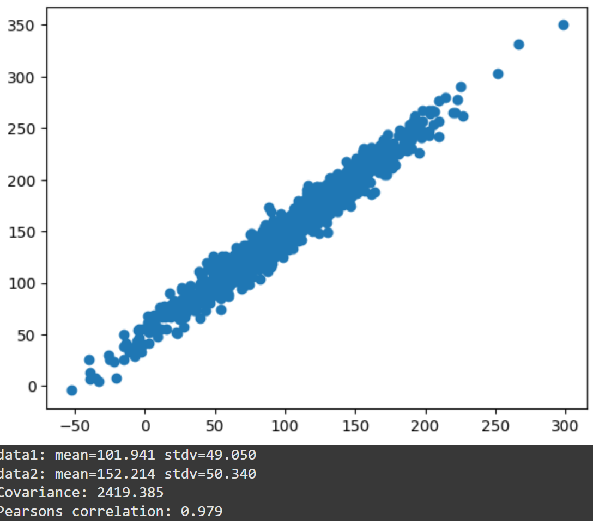
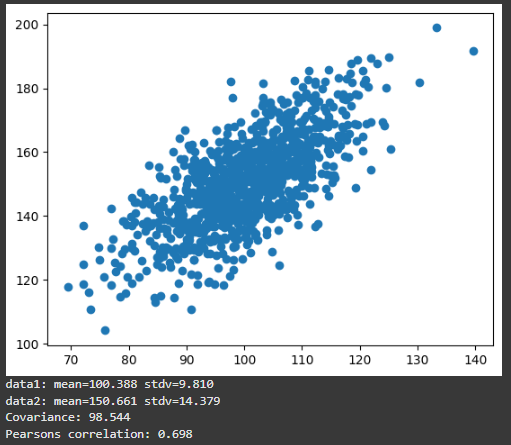

Correlation and Regression
- Defines, positive, negative or no trends.
- Is the first step in calculating correlation.
- Is sensitive to the scale of the data.
- Is not sensitive to the scale of the data.
- Is a number between -1 and 1.
- It measures the strength and relationship between 2 variables (Turney, 2022).
 
Linear regression:
- Is used to predict the value of a variable based on the value of another variable.
- Predicted variable is the dependent variable.
- The variable used to predict is the independent variable (IBM, 2021).
- This analysis normally predicts the coefficients of a linear equation of the for y = mx + c.
- Again, the more spread the data, the harder it is to predict values accurately.
- Used when the relationship between the data is non-linear.
- The relationship between the variables is modeled as an nth-degree polynomial function (Agrawal, 2021).
- Turney, S. (2022). Pearson Correlation Coefficient (r). Scribbr. Available at: https://www.scribbr.com/statistics/pearson-correlation-coefficient/ [Accessed 25 January 2025].
- IBM (2021). Linear Regression. Ibm.com. Available at: https://www.ibm.com/think/topics/linear-regression [Accessed 25 January 2025].
- Agrawal, R. (2021). Polynomial Regression | What is Polynomial Regression. [online] Analytics Vidhya. Available at: https://www.analyticsvidhya.com/blog/2021/07/all-you-need-to-know-about-polynomial-regression/ [Accessed 25 January 2025].